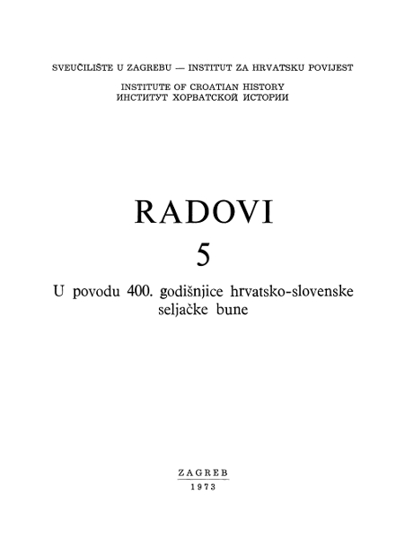

Historiografija

Nikola Istvanffy
Historiarvm de rebvs Vngaricis Libri XXXIV.
Coloniae Agrippinae (Köln): Sumptibus Antonij Hierati, 1622.
.jpg)
Stjepan Antoljak
Bune pučana i seljaka u Hrvatskoj
Zagreb: Matica hrvatska, 1956.
.jpg)
Josip Adamček
Seljačka buna 1573.
Donja Stubica: Odbor za proslavu 400 godišnjice Seljačke bune 1573, 1968.
.jpg)
Josip Adamček
Seljačka buna 1573.
Donja Stubica; Gornja Stubica: Fond za izgradnju spomen-objekta: Muzej seljačkih buna, 1973.

Ivan Kampuš (urednik)
Radovi Zavoda za hrvatsku povijest Filozofskoga fakulteta Sveučilišta u Zagrebu 5: U povodu 400. godišnjice hratsko-slovenske seljačke bune
Zagreb: Grafički zavod Hrvatske, 1973
.jpg)
Nada Klaić
Društvena previranja i bune u Hrvatskoj u XVI i XVII stoljeć
Beograd: Nolit, 1976.

Josip Adamček
Bune i otpori: seljačke bune u Hrvatskoj u XVII. stoljeću
Zagreb: Globus; Filozofski fakultet, Zavod za hrvatsku povijest, 1987.
.jpg)
.JPG) Stjepan Antoljak (1909.-1997.) doktorirao je 1935. povijest na Filozofskom fakultetu u Zagrebu, gdje je djelovao kao asistent i docent. Bio je potom ravnatelj Državnog arhiva u Zadru, znanstveni suradnik Državnog arhiva u Rijeci, profesor na Filozofskom fakultetu u Skopju, Prištini, gdje je i utemeljio Odsjek za povijest, i Zadru. Proučavao je povijest hrvatskog i makedonskog naroda, osobito srednjovjekovno razdoblje. Bavio se i istraživanjem starije hrvatske književnosti i povijesti umjetnosti. Značajan je i Antoljakov prinos hrvatskoj enciklopedistici.
Stjepan Antoljak (1909.-1997.) doktorirao je 1935. povijest na Filozofskom fakultetu u Zagrebu, gdje je djelovao kao asistent i docent. Bio je potom ravnatelj Državnog arhiva u Zadru, znanstveni suradnik Državnog arhiva u Rijeci, profesor na Filozofskom fakultetu u Skopju, Prištini, gdje je i utemeljio Odsjek za povijest, i Zadru. Proučavao je povijest hrvatskog i makedonskog naroda, osobito srednjovjekovno razdoblje. Bavio se i istraživanjem starije hrvatske književnosti i povijesti umjetnosti. Značajan je i Antoljakov prinos hrvatskoj enciklopedistici.
.png)
.jpg) Adamček, Josip, hrvatski povjesničar (Vuka kraj Osijeka, 13. III. 1933 – Zagreb, 25. XII. 1995). Studij povijesti i filozofije završio na Filozofskom fakultetu u Zagrebu (1959), gdje je doktorirao 1977. Od 1961. asistent, od 1978. izvanredni profesor, a od 1983. redoviti profesor na Odsjeku za povijest pri istom fakultetu. Proučavao agrarne odnose i društvene pokrete seljaštva na hrvatskom sjeveru od kasnoga srednjeg vijeka do 1848. god. Temeljna su mu djela: Seljačka buna 1573. (1968), analiza poznate seljačke pobune sa stajališta gospodarskih odnosa; Agrarni odnosi u Hrvatskoj od sredine XV. do kraja XVII. stoljeća (1980), cjelovit pregled društvenih i gospodarskih odnosa ranoga hrvatskog novovjekovlja; Bune i otpori. Seljačke bune u Hrvatskoj u XVII. stoljeću (1987), analiza društvenih pokreta hrvatskog seljaštva. U suradnji s I. Kampušem objavio građu Popisi i obračuni poreza u Hrvatskoj u XV. i XVI. stoljeću (1976), a sa skupinom autora priredio je zbirku izvora Seljačke bune u Hrvatskoj u XVII. stoljeću (1987). Od 1991. redoviti član HAZU. Predsjednik Saveza povijesnih društava Hrvatske (1977–81); predstojnik Odjela za hrvatsku povijest Centra za povijesne znanosti (1977–86). God. 2009. objavljena je Spomenica Josipa Adamčeka s nizom priloga suvremenih povjesničara.
Adamček, Josip, hrvatski povjesničar (Vuka kraj Osijeka, 13. III. 1933 – Zagreb, 25. XII. 1995). Studij povijesti i filozofije završio na Filozofskom fakultetu u Zagrebu (1959), gdje je doktorirao 1977. Od 1961. asistent, od 1978. izvanredni profesor, a od 1983. redoviti profesor na Odsjeku za povijest pri istom fakultetu. Proučavao agrarne odnose i društvene pokrete seljaštva na hrvatskom sjeveru od kasnoga srednjeg vijeka do 1848. god. Temeljna su mu djela: Seljačka buna 1573. (1968), analiza poznate seljačke pobune sa stajališta gospodarskih odnosa; Agrarni odnosi u Hrvatskoj od sredine XV. do kraja XVII. stoljeća (1980), cjelovit pregled društvenih i gospodarskih odnosa ranoga hrvatskog novovjekovlja; Bune i otpori. Seljačke bune u Hrvatskoj u XVII. stoljeću (1987), analiza društvenih pokreta hrvatskog seljaštva. U suradnji s I. Kampušem objavio građu Popisi i obračuni poreza u Hrvatskoj u XV. i XVI. stoljeću (1976), a sa skupinom autora priredio je zbirku izvora Seljačke bune u Hrvatskoj u XVII. stoljeću (1987). Od 1991. redoviti član HAZU. Predsjednik Saveza povijesnih društava Hrvatske (1977–81); predstojnik Odjela za hrvatsku povijest Centra za povijesne znanosti (1977–86). God. 2009. objavljena je Spomenica Josipa Adamčeka s nizom priloga suvremenih povjesničara.
.jpg) Nada Klaić (1920.-1988.) svrstava se u utemeljitelje hrvatske medievistike. Krenuvši stopama slavnog djeda Vjekoslava, diplomirala je te kasnije i doktorirala povijest na Filozofskom fakultetu u Zagrebu gdje je i radila sve do smrti. Bavila se razdobljem od doseljenja Slavena do XIX. stoljeća. Znatan dio njezina rada bio je posvećen kritici izvora – pitanju vjerodostojnosti srednjovjekovnih isprava. Značajne su njezine rasprave iz društvene povijesti, a posebnu pozornost obraćala je povijesti gradova. Napisala je niz rasprava o bunama i socijalnim sukobima, a rezultate je sabrala u knjizi Društvena previranja i bune u Hrvatskoj u XVI i XVII stoljeću (1976.).
Nada Klaić (1920.-1988.) svrstava se u utemeljitelje hrvatske medievistike. Krenuvši stopama slavnog djeda Vjekoslava, diplomirala je te kasnije i doktorirala povijest na Filozofskom fakultetu u Zagrebu gdje je i radila sve do smrti. Bavila se razdobljem od doseljenja Slavena do XIX. stoljeća. Znatan dio njezina rada bio je posvećen kritici izvora – pitanju vjerodostojnosti srednjovjekovnih isprava. Značajne su njezine rasprave iz društvene povijesti, a posebnu pozornost obraćala je povijesti gradova. Napisala je niz rasprava o bunama i socijalnim sukobima, a rezultate je sabrala u knjizi Društvena previranja i bune u Hrvatskoj u XVI i XVII stoljeću (1976.).